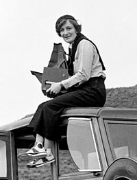

Dorothea Lange Artigo Discussão Ler Editar Ver histórico Origem: Wikipédia, a enciclopédia livre. Dorothea Lange Nascimento Dorothea Margaretta Nutzhorn 26 de maio de 1895 Hoboken (Estados Unidos) Morte 11 de outubro de 1965 (70 anos) São Francisco (Estados Unidos) Cidadania Estados Unidos Etnia Imigração alemã nos Estados Unidos Cônjuge Maynard Dixon, Paul Schuster Taylor Alma mater Universidade Columbia Ocupação jornalista, fotojornalista, fotógrafa, documentarista Prêmios Bolsa Guggenheim (1941) National Women’s Hall of Fame (2003) Hall da Fama da Califórnia (2008) Empregador Farm Security Administration, War Relocation Authority, San Francisco Art Institute Obras destacadas Migrant Mother, Nipomo, California Movimento estético Realismo social Causa da morte câncer esofágico [edite no Wikidata] Dorothea Lange (Hoboken, 26 de maio de 1895 — São Francisco, 11 de outubro de 1965) foi uma fotógrafa estadunidense. Biografia Nos anos 30, ao serviço da Farm Security Administration,[1] ela percorreu vinte e dois estados do Sul e Oeste dos Estados Unidos, recolhendo imagens que documentam o impacto da Grande Depressão na vida dos camponeses. A icônica fotografia de Lange de 1936 de Florence Owens Thompson, Mãe Migrante Lange é a autora da fotografia "Mãe Migrante", de 1936.[1] Trata-se da mais famosa fotografia saída da FSA e uma das mais reproduzidas da história da fotografia, tendo aparecido em mais de dez mil publicações. Morreu em 1965, vítima de câncer no esôfago. Mãe Migrante "Quebrou, bebê doente e problemas com o carro!" (1937) Uma das obras mais reconhecidas de Lange é Migrant Mother, publicada em 1936. A mulher na fotografia é Florence Owens Thompson. Em 1960, Lange falou sobre sua experiência tirando a fotografia: “Eu vi e me aproximei da mãe faminta e desesperada, como se atraída por um ímã. Não me lembro como lhe expliquei minha presença ou minha câmera, mas lembro que ela não me fez perguntas. Fiz cinco exposições, trabalhando de perto e mais perto da mesma direção. Não perguntei seu nome ou sua história. Ela me disse sua idade, que tinha trinta e dois anos. Ela disse que eles viviam de vegetais congelados dos campos circundantes, e pássaros que as crianças matavam. Ela tinha acabado de vender os pneus de seu carro para comprar comida. Lá ela se sentou naquela barraca com os filhos amontoados ao seu redor, e parecia saber que minhas fotos poderiam ajudá-la, então ela me ajudou. Uma espécie de igualdade sobre isso."[2]
